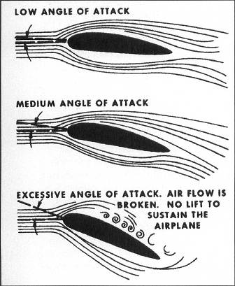

Stall
In order to talk about spins we have to first talk about stalls. A stall in aviation is caused when the angle of attack increase to a point at which lift decreases. Which means that there are varying levels of loss of lift in a stall. The stall point (critical angle of attack) varies from plane to plane. In IL2 we see stall angles as low as 9 degrees and as high as 22 degrees above plane.
Usual signs you are approaching the critical angle of attack are a drop in air speed, sluggish controls, and buffet (shaking) in controls. In a sim you most likely don't have the feed back that you would in real life, because of this you need to pay close attention to the planes response to control input, nose angle, speed, and any visual cues (shaking). This is part of understanding the limitations of your machine. Use resources such as this one to help know your limitations.
Spin
Given the above, we know that the loss of lift in a stall can vary. In a spin one wing has significantly less lift than the other wing. This causes the plane to enter the spin, which is a corkscrew downward path with stabilized speed, path, and rotation rate.